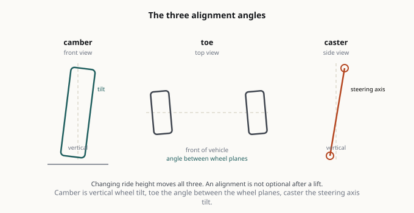
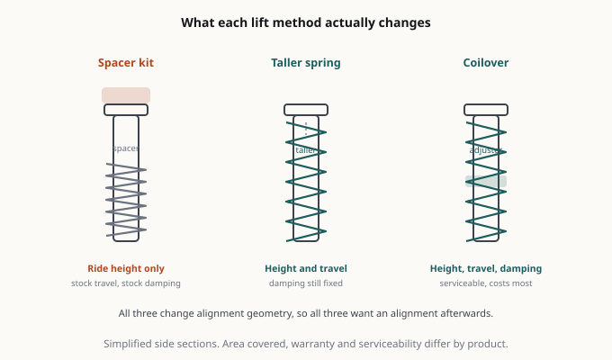

2026 실버라도 1500 RST 4x4 레벨링 킷: 실제로 무엇이 바뀌는가
실버라도 오너들이 가장 먼저 하는 작업은 성능이 아닙니다. 자세입니다. 2026 실버라도 1500 순정 차 앞에 서보면, 앞이 뒤보다 눈에 띄게 낮습니다. 이건 의도된 설계입니다. 짐을 싣거나 트레일러를 걸었을 때 차가 수평이 되도록 GM이 뒤쪽으로 기울기(rake)를 넣은 겁니다. 공학적으로는 합리적인 판단인데, 주차장에서 보면 어색합니다. 레벨링 킷이 그걸 고치는 부품이고, 이 트럭에서 가장 흔한 첫 튜닝입니다. 레벨링 킷이 하는 일, 실제로 드는 비용, 그리고 트레이드오프가 어디서 갈리는지 정리합니다.
실버라도 오너들이 가장 먼저 하는 작업은 성능이 아닙니다. 자세입니다.
2026 실버라도 1500 순정 차 앞에 서보면, 앞이 뒤보다 눈에 띄게 낮습니다. 이건 의도된 설계입니다. 짐을 싣거나 트레일러를 걸었을 때 차가 수평이 되도록 GM이 뒤쪽으로 기울기(rake)를 넣은 겁니다. 공학적으로는 합리적인 판단인데, 주차장에서 보면 어색합니다. 레벨링 킷이 그걸 고치는 부품이고, 이 트럭에서 가장 흔한 첫 튜닝입니다.
레벨링 킷이 하는 일, 실제로 드는 비용, 그리고 트레이드오프가 어디서 갈리는지 정리합니다.

레벨링 킷의 실체
레벨링 킷은 앞을 올려서 뒤와 맞추는 부품입니다. 2026 실버라도 1500에서는 두 가지 형태로 나옵니다.
스트럿 스페이서 킷. 앞 스트럿 조립체 위에 얹는 알루미늄 또는 폴리우레탄 스페이서입니다. 더 저렴하고, 1.5~2인치 정도의 적당한 높이에서는 승차감을 크게 바꾸지 않으며, 경우에 따라 스트럿을 분해하지 않고 장착할 수 있습니다. 보통 “레벨링 킷”이라 하면 이걸 말합니다.
스트럿 통교체. 리프트가 내장된 완전한 교체용 스트럿으로, 댐핑 조절이 되는 제품도 많습니다. 비싸지만 기하학을 제대로 보정하면서 승차감까지 개선할 수 있습니다.
대부분 온로드로 타는 RST 4x4라면 1.5~2인치 스트럿 스페이서가 정답입니다. 2인치를 넘으면 기하학 보정 영역으로 넘어가고 계산이 달라집니다.

진짜 비용은 킷값이 아닙니다
스페이서 자체는 브랜드와 재질에 따라 대략 8~25만 원 선입니다. 돈은 여기서 나가지 않습니다. 예산에 넣어야 할 것은 이쪽입니다.
- 얼라인먼트. 앞 서스펜션 높이를 바꾼 뒤엔 필수입니다. 이걸 빼먹는 게 가장 흔한 실수이고, 타이어를 빠르게 먹습니다.
- 공임 또는 본인 주말. 이 트럭의 스트럿 스페이서는 중간 난이도 DIY입니다. 분해한다면 스프링 컴프레서, 잭 스탠드, 그리고 실제로 사용할 토크 렌치가 필요합니다. 처음 하는 사람 기준 3~5시간 잡으세요.
- 2인치를 넘긴다면 상부 컨트롤암(UCU) 교체. 그 지점을 넘으면 순정 상부암으로는 캐스터·캠버를 제대로 못 잡습니다. 볼조인트 바인딩과 어긋난 얼라인먼트 수치가 나옵니다.

2026 RST 패키지가 여기서 의미하는 것
RST는 오프로드 패키지가 아니라 온로드 지향 외관 트림입니다. 빌드를 계획하기 전에 알아둘 점들입니다.
- RST는 더블캡과 크루캡 모두 4WD로 제공되며, KBB의 2026년 표기 기준 공차중량은 약 4,940 lb(더블캡), 5,010 lb(크루캡) 입니다.
- RST에서 선택 가능한 엔진은 2.7L 터보 4기통(TurboMax, 310마력 / 430 lb-ft), 5.3L V8, 6.2L V8, 3.0L 듀라맥스 디젤입니다.
- 공개된 RST 견인력은 2.7L 기준 13,000 lb(더블캡) / 13,200 lb(크루캡), 디젤 기준 최대 약 13,300 lb입니다(KBB 수치).
이게 레벨링 킷과 연결되는 지점은 하나입니다. 견인력 상한에 가깝게 끌고 다닌다면 앞을 올리는 걸 다시 생각하세요. 레벨링은 설계된 기울기를 없애는 것이므로, 뒤가 적재 하중에 더 눈에 띄게 주저앉고 밤에 헤드라이트가 위를 향합니다. 무거운 견인을 자주 한다면 첫 지출은 앞 스페이서가 아니라 뒤 에어백 킷이나 헬퍼 스프링이 맞습니다.
포기하게 되는 것들
사기 전에 이건 솔직하게 인정하세요.
- 헤드라이트 조준. 앞을 올리면 하향등이 위를 향합니다. 장착 후 재조준하세요. 외관 문제가 아니라 안전 문제이고, 마주 오는 차가 상향등을 켜댈 겁니다.
- 공기역학과 연비. 작지만 실재합니다. 2인치에서 고속 연비가 약간 떨어집니다.
- 보증 관련 대화. 스페이서만으로 보증이 무효가 되는 경우는 일반적이지 않지만, 앞쪽 부품이 고장 나면 딜러는 튜닝을 봅니다. 영수증을 보관하고, 미국 기준 Magnuson-Moss 법리를 알아두세요. 원인 입증 책임은 딜러 쪽에 있습니다.
- CV 액슬 각도. 4x4 앞 액슬은 리프트 후 더 가파른 각도로 돌아갑니다. 1.5~2인치에서는 보통 문제없습니다. 그 이상은 CV 조인트 수명을 깎습니다.
솔직한 권고
차가 반듯하게 서 있는 게 목적이고 대부분 포장도로를 탄다면: 1.5인치 스트럿 스페이서, 제대로 된 얼라인먼트, 헤드라이트 재조준. 그게 전부입니다. 제품 사진이 더 좋아 보인다는 이유로 3인치 킷을 사지 마세요.
견인이나 적재를 자주 한다면: 기울기는 그대로 두세요. 뒤 에어백을 사세요. 비슷한 돈으로 실제 쓸 수 있는 능력을 얻습니다.
진짜 오프로드 능력을 원한다면: 레벨링 킷을 건너뛰고 기하학이 보정된 정식 리프트를 사세요. 레벨링 킷은 자세 튜닝이고, 그걸 원한다고 말하는 데 부끄러울 건 없습니다. 다만 마케팅 페이지가 그걸 성능 업그레이드라고 설득하게 두지만 마세요.